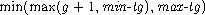

(define p (weak-cons x '()))
(car p)
 (a . b)
(a . b)
(define x (cons 'a 'b))
(define p (weak-cons x '()))
(set! x '*)
(collect)
(car p)
#!bwp
This chapter describes aspects of the storage management system and procedures that may be used to control its operation.
Scheme objects such as pairs, strings, procedures, and user-defined records are never explicitly deallocated by a Scheme program. Instead, the storage management system automatically reclaims the storage associated with an object once it proves the object is no longer accessible. In order to reclaim this storage, Chez Scheme employs a garbage collector which runs periodically as a program runs. Starting from a set of known roots, e.g., the machine registers, the garbage collector locates all accessible objects, copies them (in most cases) in order to eliminate fragmentation between accessible objects, and reclaims storage occupied by inaccessible objects.
Collections are triggered automatically by the default collect-request handler, which is invoked via a collect-request interrupt that occurs after approximately n bytes of storage have been allocated, where n is the value of the parameter collect-trip-bytes. The default collect-request handler causes a collection by calling the procedure collect without arguments. The collect-request handler can be redefined by changing the value of the parameter collect-request-handler. A program can also cause a collection to occur between collect-request interrupts by calling collect directly either without or with arguments.
Chez Scheme's collector is a generation-based collector. It segregates objects based on their age (roughly speaking, the number of collections survived) and collects older objects less frequently than younger objects. Since younger objects tend to become inaccessible more quickly than older objects, the result is that most collections take little time. The system also maintains a static generation from which storage is never reclaimed. Objects are placed into the static generation only when a heap is compacted (see Scompact_heap in Section 4.8) or when an explicitly specified target-generation is the symbol static. This is primarily useful after an application's permanent code and data structures have been loaded and initialized, to reduce the overhead of subsequent collections.
Nonstatic generations are numbered starting at zero for the youngest generation up through the current value of collect-maximum-generation. The storage manager places newly allocated objects into generation 0.
When collect is invoked without arguments, generation 0 objects that survive collection move to generation 1, generation 1 objects that survive move to generation 2, and so on, except that objects are never moved past the maximum nonstatic generation. Objects in the maximum nonstatic generation are collected back into the maximum nonstatic generation. While generation 0 is collected during each collection, older generations are collected less frequently. An internal counter, gc-trip, is maintained to control when each generation is collected. Each time collect is called without arguments (as from the default collect-request handler), gc-trip is incremented by one, and the set of generations to be collected is determined from the current value of gc-trip and the value of collect-generation-radix: with a collect-generation radix of r, the maximum collected generation is the highest numbered generation g for which gc-trip is a multiple of rg. If collect-generation-radix is set to 4, the system thus collects generation 0 every time, generation 1 every 4 times, generation 2 every 16 times, and so on.
When collect is invoked with arguments, the generations to be collected and their target generations are determined by the arguments. In addition, the first argument cg affects the value of gc-trip; that is, gc-trip is advanced to the next rcg boundary, but not past the next rcg+1 boundary, where r is the value of collect-generation-radix.
It is possible to make substantial adjustments in the collector's behavior by setting the parameters described in this section. It is even possible to completely override the collector's default strategy for determining when each generation is collected by redefining the collect-request handler to call collect with arguments. For example, the programmer can redefine the handler to treat the maximum nonstatic generation as a static generation over a long period of time by calling collect with arguments that prevent the maximum nonstatic generation from being collected during that period of time.
Additional information on Chez Scheme's collector can be found in the report "Don't stop the BiBOP: Flexible and efficient storage management for dynamically typed languages" [13].
procedure: (collect)
procedure: (collect cg)
procedure: (collect cg max-tg)
procedure: (collect cg min-tg max-tg)
returns: unspecified
libraries: (chezscheme)
This procedure causes the storage manager to perform a garbage collection. collect is invoked periodically without arguments by the default collect-request handler, but it may also be called explicitly, e.g., from a custom collect-request handler, between phases of a computation when collection is most likely to be successful, or before timing a computation. In the threaded versions of Chez Scheme, the thread that invokes collect must be the only active thread.
When called without arguments, the system determines automatically which generations to collect and the target generation for each collected generation as described in the lead-in to this section.
When called with arguments, the system collects all and only objects in generations less than or equal to cg (the maximum collected generation) into the target generation or generations determined by min-tg (the minimum target generation) and max-tg (the maximum target generation). Specifically, the target generation for any object in a collected generation g is ">, where static is taken to have the value one greater than the maximum nonstatic generation.
If present, cg must be a nonnegative fixnum no greater than the maximum nonstatic generation, i.e., the current value of the parameter collect-maximum-generation.
If present, max-tg must be a nonnegative fixnum or the symbol static and either equal to cg or one greater than cg, again treating static as having the value one greater than the maximum nonstatic generation. If max-tg is not present (but cg is), it defaults to cg if cg is equal to the maximum target generation and to one more than cg otherwise.
If present, min-tg must be a nonnegative fixnum or the symbol static and no greater than max-tg, again treating static as having the value one greater than the maximum nonstatic generation. Unless max-cg is the same as cg, min-tg must also be greater than cg. If min-tg is not present (but cg is), it defaults to the same value as max-tg.
procedure: (collect-rendezvous)
returns: unspecified
libraries: (chezscheme)
Requests a garbage collection in the same way as when the system determines that a collection should occur. All running threads are coordinated so that one of them calls the collect-request handler, while the other threads pause until the handler returns.
Note that if the collect-request handler (see collect-request-handler) does not call collect, then collect-rendezvous does not actually perform a garbage collection.
global parameter: collect-notify
libraries: (chezscheme)
If collect-notify is set to a true value, the collector prints a message whenever a collection is run. collect-notify is set to #f by default.
global parameter: collect-trip-bytes
libraries: (chezscheme)
This parameter determines the approximate amount of storage that is allowed to be allocated between garbage collections. Its value must be a positive fixnum.
Chez Scheme allocates memory internally in large chunks and subdivides these chunks via inline operations for efficiency. The storage manager determines whether to request a collection only once per large chunk allocated. Furthermore, some time may elapse between when a collection is requested by the storage manager and when the collect request is honored, especially if interrupts are temporarily disabled via with-interrupts-disabled or disable-interrupts. Thus, collect-trip-bytes is an approximate measure only.
global parameter: collect-generation-radix
libraries: (chezscheme)
This parameter determines how often each generation is collected when collect is invoked without arguments, as by the default collect-request handler. Its value must be a positive fixnum. Generations are collected once every rg times a collection occurs, where r is the value of collect-generation-radix and g is the generation number.
Setting collect-generation-radix to one forces all generations to be collected each time a collection occurs. Setting collect-generation-radix to a very large number effectively delays collection of older generations indefinitely.
global parameter: collect-maximum-generation
libraries: (chezscheme)
This parameter determines the maximum nonstatic generation, hence the total number of generations, currently in use. Its value is an exact integer in the range 1 through 254. When set to 1, only two nonstatic generations are used; when set to 2, three nonstatic generations are used, and so on. When set to 254, 255 nonstatic generations are used, plus the single static generation for a total of 256 generations. Increasing the number of generations effectively decreases how often old objects are collected, potentially decreasing collection overhead but potentially increasing the number of inaccessible objects retained in the system and thus the total amount of memory required.
global parameter: collect-request-handler
libraries: (chezscheme)
The value of collect-request-handler must be a procedure. The procedure is invoked without arguments whenever the system determines that a collection should occur, i.e., some time after an amount of storage determined by the parameter collect-trip-bytes has been allocated since the last collection.
By default, collect-request-handler simply invokes collect without arguments.
Automatic collection may be disabled by setting collect-request-handler to a procedure that does nothing, e.g.:
(collect-request-handler void)
Collection can also be temporarily disabled using critical-section, which prevents any interrupts from being handled.
In the threaded versions of Chez Scheme, the collect-request handler is invoked by a single thread with all other threads temporarily suspended.
global parameter: release-minimum-generation
libraries: (chezscheme)
This parameter's value must be between 0 and the value of collect-maximum-generation, inclusive, and defaults to the value of collect-maximum-generation.
As new data is allocated and collections occur, the storage-management system automatically requests additional virtual memory address space from the operating system. Correspondingly, in the event the heap shrinks significantly, the system attempts to return some of the virtual-memory previously obtained from the operating system back to the operating system. By default, the system attempts to do so only after a collection that targets the maximum nonstatic generation. The system can be asked to do so after collections targeting younger generations as well by altering the value release-minimum-generation to something less than the value of collect-maximum-generation. When the generation to which the parameter is set, or any older generation, is the target generation of a collection, the storage management system attempts to return unneeded virtual memory to the operating system following the collection.
When collect-maximum-generation is set to a new value g, release-minimum-generation is implicitly set to g as well if (a) the two parameters have the same value before the change, or (b) release-minimum-generation has a value greater than g.
global parameter: heap-reserve-ratio
libraries: (chezscheme)
This parameter determines the approximate amount of memory reserved (not returned to the O/S as described in the entry for release-minimum-generation) in proportion to the amount currently occupied, excluding areas of memory that have been made static. Its value must be an inexact nonnegative flonum value; if set to an exact real value, the exact value is converted to an inexact value. The default value, 1.0, reserves one page of memory for each currently occupied nonstatic page. Setting it to a smaller value may result in a smaller average virtual memory footprint, while setting it to a larger value may result in fewer calls into the operating system to request and free memory space.
Weak pairs allow programs to maintain weak pointers to objects. A weak pointer to an object does not prevent the object from being reclaimed by the storage management system, but it does remain valid as long as the object is otherwise accessible in the system.
Ephemeron pairs are like weak pairs, but ephemeron pairs combine two pointers where the second is retained only as long as the first is retained.
Guardians allow programs to protect objects from deallocation by the garbage collector and to determine when the objects would otherwise have been deallocated.
Weak pairs, ephemeron pairs, and guardians allow programs to retain information about objects in separate data structures (such as hash tables) without concern that maintaining this information will cause the objects to remain indefinitely in the system. Ephemeron pairs allow such data structures to retain key-value combinations where a value may refer to its key, but the combination can be reclaimed if neither must be saved otherwise. In addition, guardians allow objects to be saved from deallocation indefinitely so that they can be reused or so that clean-up or other actions can be performed using the data stored within the objects.
The implementation of guardians and weak pairs used by Chez Scheme is described in [12]. Ephemerons are described in [23], but the implementation in Chez Scheme avoids quadratic-time worst-case behavior.
procedure: (weak-cons obj1 obj2)
returns: a new weak pair
libraries: (chezscheme)
obj1 becomes the car and obj2 becomes the cdr of the new pair. Weak pairs are indistinguishable from ordinary pairs in all but two ways:
The weak pointer in the car of a weak pair is just like a normal pointer as long as the object to which it points is accessible through a normal (nonweak) pointer somewhere in the system. If at some point the garbage collector recognizes that there are no nonweak pointers to the object, however, it replaces each weak pointer to the object with the "broken weak-pointer" object, #!bwp, and discards the object.
The cdr field of a weak pair is not a weak pointer, so weak pairs may be used to form lists of weakly held objects. These lists may be manipulated using ordinary list-processing operations such as length, map, and assv. (Procedures like map that produce list structure always produce lists formed from nonweak pairs, however, even when their input lists are formed from weak pairs.) Weak pairs may be altered using set-car! and set-cdr!; after a set-car! the car field contains a weak pointer to the new object in place of the old object. Weak pairs are especially useful for building association pairs in association lists or hash tables.
Weak pairs are printed in the same manner as ordinary pairs; there is no reader syntax for weak pairs. As a result, weak pairs become normal pairs when they are written and then read.
(define x (cons 'a 'b))
(define p (weak-cons x '()))
(car p) (a . b)
(define x (cons 'a 'b))
(define p (weak-cons x '()))
(set! x '*)
(collect)
(car p) #!bwp
The latter example above may in fact return (a . b) if a garbage collection promoting the pair into an older generation occurs prior to the assignment of x to *. It may be necessary to force an older generation collection to allow the object to be reclaimed. The storage management system guarantees only that the object will be reclaimed eventually once all nonweak pointers to it are dropped, but makes no guarantees about when this will occur.
procedure: (weak-pair? obj)
returns: #t if obj is a weak pair, #f otherwise
libraries: (chezscheme)
(weak-pair? (weak-cons 'a 'b)) #t
(weak-pair? (cons 'a 'b)) #f
(weak-pair? "oops") #f
procedure: (ephemeron-cons obj1 obj2)
returns: a new ephemeron pair
libraries: (chezscheme)
obj1 becomes the car and obj2 becomes the cdr of the new pair. Ephemeron pairs are indistinguishable from ordinary pairs in all but two ways:
An ephemeron pair behaves like a weak pair, but the cdr is treated specially in addition to the car: the cdr of an ephemeron is set to #!bwp at the same time that the car is set to #!bwp. Since the car and cdr fields are set to #!bwp at the same time, then the fact that the car object may be referenced through the cdr object does not by itself imply that car must be preserved (unlike a weak pair); instead, the car must be saved for some reason independent of the cdr object.
Like weak pairs and other pairs, ephemeron pairs may be altered using set-car! and set-cdr!, and ephemeron pairs are printed in the same manner as ordinary pairs; there is no reader syntax for ephemeron pairs.
(define x (cons 'a 'b))
(define p (ephemeron-cons x x))
(car p) (a . b)
(cdr p) (a . b)
(define x (cons 'a 'b))
(define p (ephemeron-cons x x))
(set! x '*)
(collect)
(car p) #!bwp
(cdr p) #!bwp
(define x (cons 'a 'b))
(define p (weak-cons x x)) ; not an ephemeron pair
(set! x '*)
(collect)
(car p) (a . b)
(cdr p) (a . b)
As with weak pairs, the last two expressions of the middle example above may in fact return (a . b) if a garbage collection promoting the pair into an older generation occurs prior to the assignment of x to *. In the last example above, however, the results of the last two expressions will always be (a . b), because the cdr of a weak pair holds a non-weak reference, and that non-weak reference prevents the car field from becoming #!bwp.
procedure: (ephemeron-pair? obj)
returns: #t if obj is a ephemeron pair, #f otherwise
libraries: (chezscheme)
(ephemeron-pair? (ephemeron-cons 'a 'b)) #t
(ephemeron-pair? (cons 'a 'b)) #f
(ephemeron-pair? (weak-cons 'a 'b)) #f
(ephemeron-pair? "oops") #f
procedure: (bwp-object? obj)
returns: #t if obj is the broken weak-pair object, #f otherwise
libraries: (chezscheme)
(bwp-object? #!bwp) #t
(bwp-object? 'bwp) #f
(define x (cons 'a 'b))
(define p (weak-cons x '()))
(set! x '*)
(collect (collect-maximum-generation))
(car p) #!bwp
(bwp-object? (car p)) #t
procedure: (make-guardian)
returns: a new guardian
libraries: (chezscheme)
Guardians are represented by procedures that encapsulate groups of objects registered for preservation. When a guardian is created, the group of registered objects is empty. An object is registered with a guardian by passing the object as an argument to the guardian:
(define G (make-guardian))
(define x (cons 'aaa 'bbb))
x (aaa . bbb)
(G x)
It is also possible to specify a "representative" object when registering an object. Continuing the above example:
(define y (cons 'ccc 'ddd))
y (ccc . ddd)
(G y 'rep)
The group of registered objects associated with a guardian is logically subdivided into two disjoint subgroups: a subgroup referred to as "accessible" objects, and one referred to "inaccessible" objects. Inaccessible objects are objects that have been proven to be inaccessible (except through the guardian mechanism itself or through the car field of a weak or ephemeron pair), and accessible objects are objects that have not been proven so. The word "proven" is important here: it may be that some objects in the accessible group are indeed inaccessible but that this has not yet been proven. This proof may not be made in some cases until long after the object actually becomes inaccessible (in the current implementation, until a garbage collection of the generation containing the object occurs).
Objects registered with a guardian are initially placed in the accessible group and are moved into the inaccessible group at some point after they become inaccessible. Objects in the inaccessible group are retrieved by invoking the guardian without arguments. If there are no objects in the inaccessible group, the guardian returns #f. Continuing the above example:
(G) #f
(set! x #f)
(set! y #f)
(collect)
(G) (aaa . bbb) ; this might come out second
(G) rep ; and this first
(G) #f
The initial call to G returns #f, since the pairs bound to x and y are the only object registered with G, and the pairs are still accessible through those bindings. When collect is called, the objects shift into the inaccessible group. The two calls to G therefore return the pair previously bound to x and the representative of the pair previously bound to y, though perhaps in the other order from the one shown. (As noted above for weak pairs, the call to collect may not actually be sufficient to prove the object inaccessible, if the object has migrated into an older generation.)
Although an object registered without a representative and returned from a guardian has been proven otherwise inaccessible (except possibly via the car field of a weak or ephemeron pair), it has not yet been reclaimed by the storage management system and will not be reclaimed until after the last nonweak pointer to it within or outside of the guardian system has been dropped. In fact, objects that have been retrieved from a guardian have no special status in this or in any other regard. This feature circumvents the problems that might otherwise arise with shared or cyclic structure. A shared or cyclic structure consisting of inaccessible objects is preserved in its entirety, and each piece registered for preservation with any guardian is placed in the inaccessible set for that guardian. The programmer then has complete control over the order in which pieces of the structure are processed.
An object may be registered with a guardian more than once, in which case it will be retrievable more than once:
(define G (make-guardian))
(define x (cons 'aaa 'bbb))
(G x)
(G x)
(set! x #f)
(collect)
(G) (aaa . bbb)
(G) (aaa . bbb)
It may also be registered with more than one guardian, and guardians themselves can be registered with other guardians.
An object that has been registered with a guardian without a representative and placed in the car field of a weak or ephemeron pair remains in the car field of the weak or ephemeron pair until after it has been returned from the guardian and dropped by the program or until the guardian itself is dropped.
(define G (make-guardian))
(define x (cons 'aaa 'bbb))
(define p (weak-cons x '()))
(G x)
(set! x #f)
(collect)
(set! y (G))
y (aaa . bbb)
(car p) (aaa . bbb)
(set! y #f)
(collect 1)
(car p) #!bwp
(The first collector call above would promote the object at least into generation 1, requiring the second collector call to be a generation 1 collection. This can also be forced by invoking collect several times.)
On the other hand, if a representative (other than the object itself) is specified, the guarded object is dropped from the car field of the weak or ephemeron pair at the same time as the representative becomes available from the guardian.
(define G (make-guardian))
(define x (cons 'aaa 'bbb))
(define p (weak-cons x '()))
(G x 'rep)
(set! x #f)
(collect)
(G) rep
(car p) #!bwp
The following example illustrates that the object is deallocated and the car field of the weak pair set to #!bwp when the guardian itself is dropped:
(define G (make-guardian))
(define x (cons 'aaa 'bbb))
(define p (weak-cons x '()))
(G x)
(set! x #f)
(set! G #f)
(collect)
(car p) #!bwp
The example below demonstrates how guardians might be used to deallocate external storage, such as storage managed by the C library "malloc" and "free" operations.
(define malloc
(let ([malloc-guardian (make-guardian)])
(lambda (size)
; first free any storage that has been dropped. to avoid long
; delays, it might be better to deallocate no more than, say,
; ten objects for each one allocated
(let f ()
(let ([x (malloc-guardian)])
(when x
(do-free x)
(f))))
; then allocate and register the new storage
(let ([x (do-malloc size)])
(malloc-guardian x)
x))))
do-malloc must return a Scheme object "header" encapsulating a pointer to the external storage (perhaps as an unsigned integer), and all access to the external storage must be made through this header. In particular, care must be taken that no pointers to the external storage exist outside of Scheme after the corresponding header has been dropped. do-free must deallocate the external storage using the encapsulated pointer. Both primitives can be defined in terms of foreign-alloc and foreign-free or the C-library "malloc" and "free" operators, imported as foreign procedures. (See Chapter 4.)
If it is undesirable to wait until malloc is called to free dropped storage previously allocated by malloc, a collect-request handler can be used instead to check for and free dropped storage, as shown below.
(define malloc)
(let ([malloc-guardian (make-guardian)])
(set! malloc
(lambda (size)
; allocate and register the new storage
(let ([x (do-malloc size)])
(malloc-guardian x)
x)))
(collect-request-handler
(lambda ()
; first, invoke the collector
(collect)
; then free any storage that has been dropped
(let f ()
(let ([x (malloc-guardian)])
(when x
(do-free x)
(f)))))))
With a bit of refactoring, it would be possible to register the encapsulated foreign address as a representative with each header, in which do-free would take just the foreign address as an argument. This would allow the header to be dropped from the Scheme heap as soon as it becomes inaccessible.
Guardians can also be created via ftype-guardian, which supports reference counting of foreign objects.
procedure: (guardian? obj)
returns: #t if obj is a guardian, #f otherwise
libraries: (chezscheme)
(guardian? (make-guardian)) #t
(guardian? (ftype-guardian iptr)) #t
(guardian? (lambda x x)) #f
(guardian? "oops") #f
procedure: (unregister-guardian guardian)
returns: see below
libraries: (chezscheme)
unregister-guardian unregisters the as-yet unresurrected objects currently registered with the guardian, with one caveat.
The caveat, which applies only to threaded versions of Chez Scheme, is that objects registered with the guardian by other threads since the last garbage collection might not be unregistered. To ensure that all objects are unregistered in a multithreaded application, a single thread can be used both to register and unregister objects. Alternatively, an application can arrange to define a collect-request handler that calls unregister-guardian after it calls collect.
In any case, unregister-guardian returns a list containing each object (or its representative, if specified) that it unregisters, with duplicates as appropriate if the same object is registered more than once with the guardian. Objects already resurrected but not yet retrieved from the guardian are not included in the list but remain retrievable from the guardian.
In the current implementation, unregister-guardian takes time proportional to the number of unresurrected objects currently registered with all guardians rather than those registered just with the corresponding guardian.
The example below assumes no collections occur except for those resulting from explicit calls to collect.
(define g (make-guardian))
(define x (cons 'a 'b))
(define y (cons 'c 'd))
(g x)
(g x)
(g y)
(g y)
(set! y #f)
(collect 0 0)
(unregister-guardian g) ((a . b) (a . b))
(g) (c . d)
(g) (c . d)
(g) #f
unregister-guardian can also be used to unregister ftype pointers registered with guardians created by ftype-guardian (Section 15.6).
All pointers from C variables or data structures to Scheme objects should generally be discarded before entry (or reentry) into Scheme. When this guideline cannot be followed, the object may be locked via lock-object or via the equivalent C library procedure Slock_object (Section 4.8).
procedure: (lock-object obj)
returns: unspecified
libraries: (chezscheme)
Locking an object prevents the storage manager from reclaiming or relocating the object. Locking should be used sparingly, as it introduces memory fragmentation and increases storage management overhead.
Locking can also lead to accidental retention of storage if objects are not unlocked. Objects may be unlocked via unlock-object or the equivalent C library procedure Sunlock_object.
Locking immediate values, such as fixnums, booleans, and characters, or objects that have been made static is unnecessary but harmless.
procedure: (unlock-object obj)
returns: unspecified
libraries: (chezscheme)
An object may be locked more than once by successive calls to lock-object, Slock_object, or both, in which case it must be unlocked by an equal number of calls to unlock-object or Sunlock_object before it is truly unlocked.
An object contained within a locked object, such as an object in the car of a locked pair, need not also be locked unless a separate C pointer to the object exists. That is, if the inner object is accessed only via an indirection of the outer object, it should be left unlocked so that the collector is free to relocate it during collection.
Unlocking immediate values, such as fixnums, booleans, and characters, or objects that have been made static is unnecessary and ineffective but harmless.
procedure: (locked-object? obj)
returns: #t if obj is locked, immediate, or static
libraries: (chezscheme)
This predicate returns true if obj cannot be relocated or reclaimed by the collector, including immediate values, such as fixnums, booleans, and characters, and objects that have been made static.
Chez Scheme Version 9 User's Guide
Copyright © 2022 Cisco Systems, Inc.
Licensed under the Apache License Version 2.0
(full copyright notice.).
Revised April 2022 for Chez Scheme Version 9.5.8
about this book